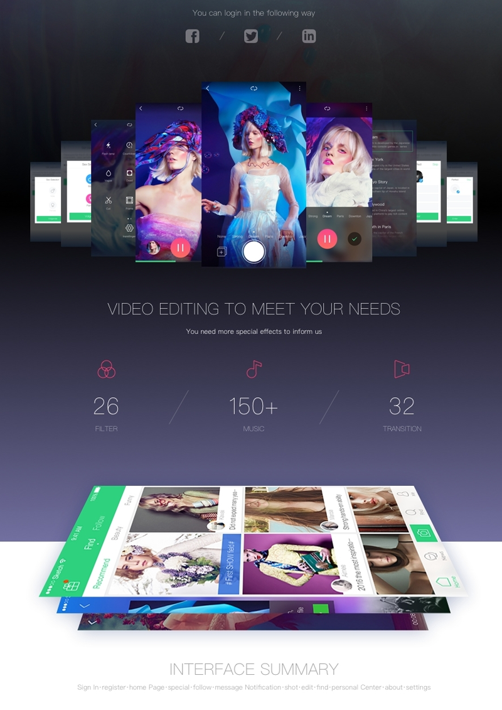

imeo


For all the fans of online games!
Do you want to be among the first to see a new online game? Do you wanna play a game that isnt even yet in stores? This app gives you all the unique moments of exploring, buying and playing a game before its released to public!
Always appreciate feedback.
Just a simple design concept that helps you to focus better by blocking those social websites.
Be sure to check attached realpixels, dark version and the interactions :)

Do you want to be among the first to see a new online game? Do you wanna play a game that isnt even yet in stores? This app gives you all the unique moments of exploring, buying and playing a game before its released to public!
Always appreciate feedback.
Just a simple design concept that helps you to focus better by blocking those social websites.
Be sure to check attached realpixels, dark version and the interactions :)